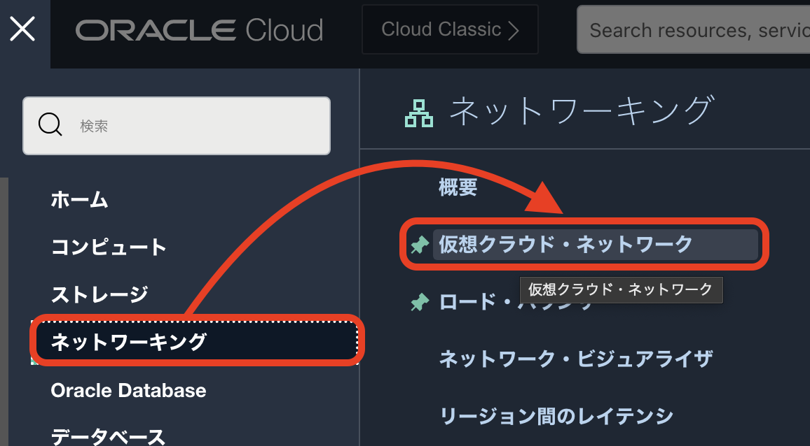
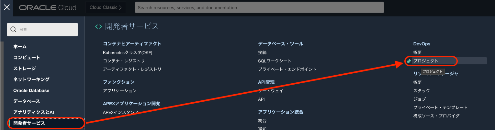
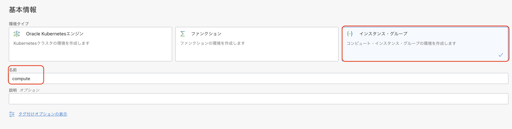
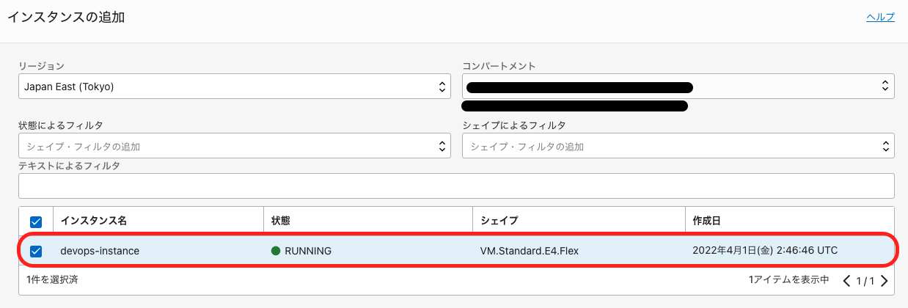
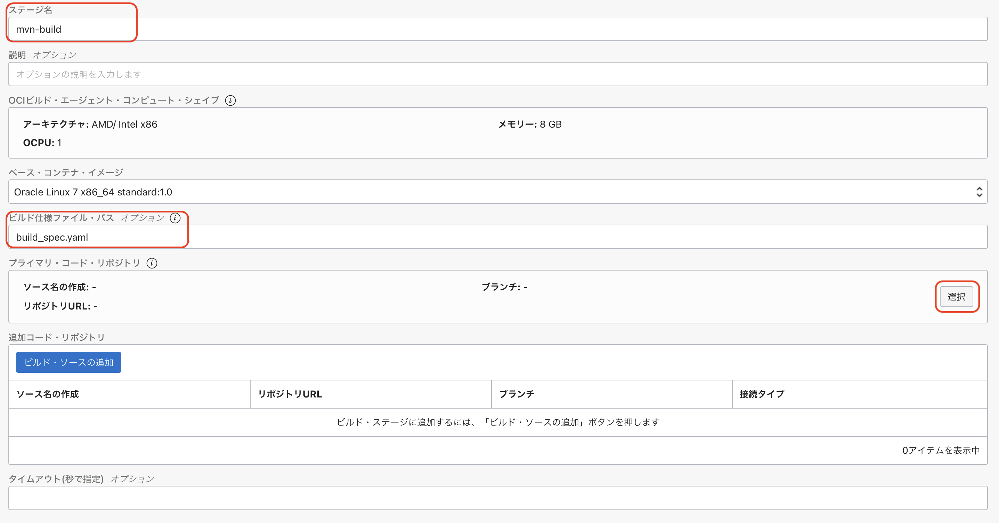
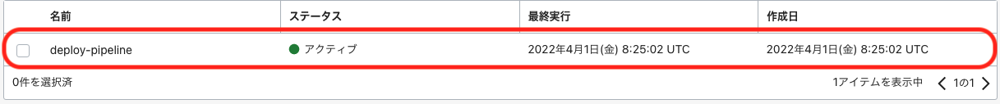
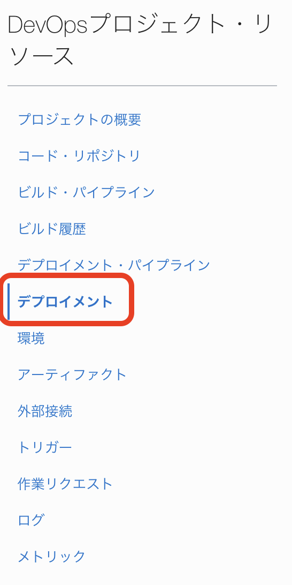

OCI DevOps は、OCI 上に CI/CD 環境を構築するマネージドサービスです。このハンズオンでは、OCI上のComputeに対する CI/CD パイプラインの構築手順を記します。
前提条件
- 環境
- OCI DevOps事前準備が完了していること
全体構成
本ハンズオンでは、以下のような環境を構築し、ソースコードの変更がCompute上のサンプルアプリケーションに自動的に反映されることを確認します。

このうち、DevOpsインスタンスについては、事前準備で構築済みです。
事前準備
まず、事前準備として、OCI DevOpsのGitレポジトリの認証で利用する認証トークンを取得します。
右上にある「プロファイル」アイコンをクリックして、プロファイル名を選択します。

左メニュー「認証トークン」を選択します。

「トークンの作成」をボタンをクリックします。

「説明」に「oci-devops-handson」と入力して、「トークンの生成」ボタンをクリックします。

「コピー」をクリックして、「閉じる」ボタンをクリックします。 コピーした認証トークンは、後の手順で必要となるので、テキストエディタなどにペーストしておきます。

以上で、認証トークンの作成は完了です。
全体の流れ
- Computeインスタンス環境の構築
- DevOps環境構築
- CIパイプラインとCDパイプラインの作成
- パイプラインの実行
1. Computeインスタンス環境の構築
ここでは、サンプルアプリケーションを動作させるComputeインスタンスを作成します。

1-1. インスタンスの作成
OCIコンソール画面のハンバーガメニューからコンピュート=>インスタンスをクリックします。

 をクリックします。
をクリックします。
以下の項目を入力します。
| 項目 | 入力内容 |
| 名前 | devops-instance |

イメージとシェイプまでスクロールした後に、イメージの変更をクリックします。

Oracle Linux Cloud Developerを選択し、下部の同意項目にチェックを入れ、イメージの選択をクリックします。

ネットワーキングまでスクロールした後に、 を選択します。
を選択します。
SSHキーの追加までスクロールした後に、秘密キーの保存をクリックします。
ここで、ダウンロードされた秘密キーはインスタンスにSSHログインする際に利用します。
(このハンズオンでは、インスタンスに対してSSHログインすることはありません)

最下部までスクロールし、 をクリックします。
をクリックします。
管理タブのCloud-initスクリプトの貼付けを選択し、Cloud-initスクリプト欄に以下の項目を入力します。
#!/bin/bash
sudo setenforce permissive
firewall-cmd --permanent --add-port=8080/tcp
firewall-cmd --reload
cloud-initについて
cloud-initは、インスタンス構築時に自動的に初期設定を行う際に便利な機能です。
今回は、サンプルアプリケーションが利用するポートを解放しておくために利用しています。

 をクリックします。
をクリックします。
インスタンスのステータスが実行中になるまで数分程度待機します。
ステータスが実行中になったら、インスタンスのパブリックIPを確認しておきます。
パブリックIPはインスタンス情報のパブリックIPアドレス:に記載されています。
(横にあるコピーをクリックするとコピーできます)
このIPアドレスはサンプルアプリケーションの動作確認で利用するので、エディタなどに記録しておいてください。

これでインスタンスの作成は完了です。
1-2. ネットワークの構成
ここでは、サンプルアプリケーションを外部からアクセスするためのVCNのセキュリティ・リストを設定します。
セキュリティリストについて
cloud-initは、インスタンス構築時に自動的に初期設定を行う際に便利な機能です。
今回は、サンプルアプリケーションが利用するポートを解放しておくために利用しています。
OCIコンソール画面のハンバーガメニューからネットワーキング=>仮想クラウド・ネットワークをクリックします。

先ほどのインスタンス作成と同時に作成されたVCNをクリックします。

表示されたサブネットをクリックします。

表示されたセキュリティ・リストをクリックします。

 をクリックし、以下の項目を入力します。
をクリックし、以下の項目を入力します。
| 項目 | 入力内容 |
| ソースCIDR | 0.0.0.0/0 |
| 宛先ポート範囲 | 8080 |

 をクリックします。
をクリックします。
これで、ネットワークの構成は完了です。
2. OCI DevOps環境の構築
ここでは、OCI DevOps環境を構築していきます。

2-1.サンプルアプリケーションと関連資材の取得
今回のハンズオンで利用するサンプルアプリケーションと関連資材を取得します。
Cloud Shellを起動し、以下のコマンドを実行します。
wget https://orasejapan.objectstorage.ap-tokyo-1.oci.customer-oci.com/n/orasejapan/b/oci-devops-handson/o/compute%2Foci-devops-compute.zip
解凍します。
unzip compute_oci-devops-compute.zip
これでサンプルアプリケーションと関連資材の取得は完了です。
2-2.ポリシーの設定
ここでは、事前準備に追加で必要なポリシーの設定を行います。
2-2-1 OCI DevOpsで利用する動的グループ
本ハンズオンで利用するために追加で必要となる動的グループを作成します。
今回設定する動的グループは以下になります。
| 動的グループ | ルール | 説明 |
|---|---|---|
| OCI_DevOps_Dynamic_Group_Compute | instance.compartment.id = ‘コンパートメントOCID’ | コンパートメント内の全てのインスタンスを含めた動的グループ |
本ハンズオンでの動的グループについて
今回は、簡易的にハンズオンを実施するために、コンパートメント内の全てのリソースやインスタンスを動的グループとして含める設定を行なっています。
本来は、各サービスのタイプを指定して動的グループを作成することになります。
2-2-2 OCI DevOpsで利用するポリシー
本ハンズオンで利用するために追加で必要となるポリシーを作成します。
ポリシーは以下となります。
| ポリシー | 説明 |
|---|---|
| Allow dynamic-group OCI_DevOps_Dynamic_Group_Compute to use instance-agent-command-execution-family in compartment id コンパートメントOCID | 対象Computeに対するコマンド実行を許可するポリシー |
| Allow dynamic-group OCI_DevOps_Dynamic_Group_Compute to manage instance-agent-command-family in compartment id コンパートメントOCID | 対象Computeに対するコマンド実行を許可するポリシー |
| Allow dynamic-group OCI_DevOps_Dynamic_Group_Compute to read instance-family in compartment id コンパートメントOCID | Computeの参照を許可するポリシー |
2-2-3 ポリシーの設定
ここでは、事前準備で設定したポリシーに今回のハンズオンで必要となるポリシーを作成していきます。
Cloud Shellを起動し、以下のコマンドを実行します。
chmod +x devops-template-for-compute/prepare/prepare.sh
スクリプトを実行します。
./devops-template-for-compute/prepare/prepare.sh
コマンド結果
ocid1.tenancy.oc1..xxxxxxxxxxxxxxxxxxxxxxxxxxxxxxxxxxxxxxxxxxxxxxxxxxxxxxxxxxxx
{
"data": {
"compartment-id": "ocid1.tenancy.oc1..aaxxxxxxxxxxxxxxxxxxxxxxxxxxxxxxxx55asqdzge45nq",
"defined-tags": {
"Oracle-Tags": {
"CreatedBy": "oracleidentitycloudservice/xxxxxx.xxxxxx@gmail.com",
"CreatedOn": "2022-01-31T01:35:54.465Z"
}
},
"description": "OCI_DevOps_Dynamic_Group_Compute",
"freeform-tags": {},
"id": "ocid1.dynamicgroup.oc1..aaxxxxxxxxxxxxxxxxxxxxxxxxxxxxxxxx55asqdzge45nq",
"inactive-status": null,
"lifecycle-state": "ACTIVE",
"matching-rule": "any {instance.compartment.id = 'ocid1.tenancy.oc1..xxxxxxxxxxxxxxxxxxxxxxxxxxxxxxxxxxxxxxxxxxxxxxxxxxxxxxxxxxxx'}",
"name": "OCI_DevOps_Dynamic_Group_Compute",
"time-created": "2021-11-18T07:41:50.880000+00:00"
},
"etag": "66c9058cf8f1145ce9047130c4a266d816e9dfbf"
}
{
"data": {
"compartment-id": "ocid1.tenancy.oc1..xxxxxxxxxxxxxxxxxxxxxxxxxxxxxxxxxxxxxxxxxxxxxxxxxxxxxxxxxxxx",
"defined-tags": {
"Oracle-Tags": {
"CreatedBy": "oracleidentitycloudservice/xxxxxxxxxxx@xxxxx",
"CreatedOn": "2021-11-18T07:41:50.746Z"
}
},
"description": "OCI_DevOps_Policy",
"freeform-tags": {},
"id": "ocid1.policy.oc1..xxxxxxxxxxxxxxxxxxxxxxxxxxxxxxxxxxxxxxxxxxxxxxxxxxxxxxxxxxxx",
"inactive-status": null,
"lifecycle-state": "ACTIVE",
"name": "OCI_DevOps_Policy",
"statements": [
"Allow dynamic-group OCI_DevOps_Dynamic_Group_Compute to manage instance-agent-command-family in compartment id ocid1.tenancy.oc1..xxxxxxxxxxxxxxxxxxxxxxxxxxxxxxxxxxxxxxxxxxxxxxxxxxxxxxxxxxxx",
"Allow dynamic-group OCI_DevOps_Dynamic_Group_Compute to use instance-agent-command-execution-family in compartment id ocid1.tenancy.oc1..xxxxxxxxxxxxxxxxxxxxxxxxxxxxxxxxxxxxxxxxxxxxxxxxxxxxxxxxxxxx"
],
"time-created": "2021-11-18T07:41:50.880000+00:00",
"version-date": null
},
"etag": "31c9339700c6132a1b6205df041ad52fcf66be51"
}
これで、ポリシーの設定は完了です。
2-3.DevOpsの設定
ここでは、デプロイ先である「環境」の登録、DevOps上のGitレポジトリ、ビルド成果物/デプロイメント構成ファイルを格納するためのアーティファクト・レジストリの設定を行います。
2-3-1 環境の登録
ハンバーガメニューから、開発者メニューからDevOpsカテゴリのプロジェクトをクリックします。

oci-devops-handsonプロジェクトをクリックします。

左側にあるDevOpsプロジェクト・リソースから環境を選択します。

 をクリックします。
をクリックします。
以下の項目を入力します。
| 項目 | 入力内容 |
| 環境タイプ | インスタンスグループ |
| 名前 | Compute |

 をクリックします。
をクリックします。
 をクリックします。
をクリックします。
以下の項目を入力します。
| リージョン | お使いのリージョンを選択 |
| コンパートメント | お使いのコンパートメント(通常はルートコンパートメント)を選択 |
| インスタンス | 先ほど構築したdevops-instanceにチェック |

をクリックします。
をクリックします。
これで環境の作成は完了です。
2-3-2 Gitレポジトリの作成
ここでは、Gitレポジトリの作成を行います。
OCI DevOpsの「コード・リポジトリ」では、独自のプライベート・コード・リポジトリをOCI DevOps上に作成します。
ハンバーガメニューから、開発者メニューからDevOpsカテゴリのプロジェクトをクリックします。
oci-devops-handsonプロジェクトをクリックします。
左側にあるDevOpsプロジェクト・リソースからコード・レポジトリを選択します。

「リポジトリの作成」ボタンをクリックします。

「リポジトリ名」に「oci-devops-handson」と入力して、「リポジトリの作成」ボタンをクリックします。


次に、プッシュ先を取得するために「クローン」ボタンをクリックします。

「HTTPSでクローニングします 読取り専用」にある「コピー」をクリックして、「閉じる」ボタンをクリックします。コピーした内容は、テキストエディタにペーストしておきます。

Cloud Shellを利用して、「oci-devops-handson」リポジトリをプルします。
リポジトリのURLは、先ほどテキストエディタにペーストしたURLを指定します。
「xxxxxxxxxx」箇所はご自身の環境に合わせて置き換えてください。
以上で、レポジトリの作成は完了です。
2-3-3 サンプルアプリケーションのPush
ここでは、サンプルアプリケーションを先ほど作成したGitレポジトリにPushします。
「oci-devops-handson」リポジトリを利用する上で、ユーザ名とパスワードが必要となります。
ユーザ名は、<テナンシ名>/<ユーザ名> となります。
＜ユーザ名＞を確認します。ユーザ名は右上にある「プロファイル」アイコンをクリックして、プロファイル名を選択します。

「ユーザーの詳細画面」の赤枠箇所をコピーして、テキストエディタにペーストしておきます。

次に、＜テナンシ名＞を確認します。
右上にある「プロファイル」アイコンをクリックして、「テナンシ」を選択します。

「テナンシ詳細」の「名前」赤枠箇所をコピーして、テキストエディタにペーストしておきます。
また、後続手順で必要となる「オブジェクト・ストレージ・ネームスペース」の赤枠箇所もコピーして、テキストエディタにペーストしておきます。

以下、テキストエディタにペーストした内容に当てはめて利用します。
ユーザ名：<テナンシ名>/<ユーザ名>
パスワードは、事前準備で作成した 認証トークン を利用します。
git clone https://devops.scmservice.xx-xxxxxx-1.oci.oraclecloud.com/namespaces/xxxxxxxxxx/projects/oci-devops-handson/repositories/oci-devops-handson
ユーザ名は、先ほど確認した内容、パスワードは事前準備で作成した認証トークンを入力します。
※パスワードは入力時に表示されません。
Username for 'https://devops.scmservice.xx-xxxxxx-1.oci.oraclecloud.com': xxxxxxxxx/oracleidentitycloudservice/xxxxxx.xxxxxxxx@oracle.com
Password for 'https://xxxxxxxxxx/oracleidentitycloudservice/xxxxxx.xxxxxxxx@oracle.com@devops.scmservice.xx-xxxxxx-1.oci.oraclecloud.com':
remote: Counting objects: 2, done
remote: Finding sources: 100% (2/2)
remote: Getting sizes: 100% (1/1)
remote: Total 2 (delta 0), reused 2 (delta 0)
Unpacking objects: 100% (2/2), done.
「oci-devops-handson」ディレクトリがあることを確認します。
ls
oci-devops-handson oci-devops-compute compute%2Foci-devops-compute.zip
ダウンロードしたサンプルコードを「oci-devops-handson」ディレクトリにコピーします。
cp -R oci-devops-compute/* ./oci-devops-handson
コミットしてからプッシュします。
cd ./oci-devops-handson
git add -A .
「＜email＞」任意のメールアドレス、「＜user_name＞」任意のユーザ名を入力してください。
git config --global user.email "<email>"
git config --global user.name "<user_name>"
コミットします。
git commit -m "first commit"
コマンド結果
[main e964068] first commit
6 files changed, 111 insertions(+)
create mode 100644 Dockerfile
create mode 100644 README.md
create mode 100644 build_spec.yaml
create mode 100644 content.html
create mode 100644 deploy.yaml
create mode 100755 prepare/prepare.sh
mainブランチを指定します。
git branch -M main
リポジトリにプッシュします。
git push -u origin main
ユーザ名は、先ほど確認した内容、パスワードは事前準備で作成した認証トークンを入力します。
※パスワードは入力時に表示されません。
コマンド結果
Username for 'https://devops.scmservice.xx-xxxxxx-1.oci.oraclecloud.com': xxxxxxxxx/oracleidentitycloudservice/xxxxxx.xxxxxxxx@oracle.com
Password for 'https://xxxxxxxxxx/oracleidentitycloudservice/xxxxxx.xxxxxxxx@oracle.com@devops.scmservice.xx-xxxxxx-1.oci.oraclecloud.com':
Counting objects: 10, done.
Delta compression using up to 2 threads.
Compressing objects: 100% (8/8), done.
Writing objects: 100% (9/9), 1.93 KiB | 0 bytes/s, done.
Total 9 (delta 0), reused 0 (delta 0)
To https://devops.scmservice.xx-xxxxxx-1.oci.oraclecloud.com/namespaces/xxxxxxxxxx/projects/oci-devops-handson/repositories/oci-devops-handson
b52f2cd..d16bcff main -> main
Branch main set up to track remote branch main from origin.
ホームディレクトリに戻っておきます。
cd ~
以上で、サンプルアプリケーションのPushは完了です。
2-3-4 アーティファクト・レジストリの作成とデプロイメント構成ファイルの登録
OCI DevOpsからComputeにデプロイする際に利用するデプロイメント構成ファイルをアーティファクト・レジストリに登録します。
この登録した構成ファイルを利用して、OCI DevOpsから自動でComputeにデプロイすることが可能になります。
アーティファクト・レジストリを作成します。 左上のハンバーガーメニューをクリックして、「開発者サービス」-「アーティファクト・レジストリ」を選択します。

「リポジトリの作成」ボタンをクリックします。

「名前」に「artifact-repository」と入力、「不変アーティファクト」のチェックを外します。

「作成」ボタンをクリックします。

「アーティファクトのアップロード」ボタンをクリックします。

以下の項目を入力します。
| 項目 | 入力内容 |
| アーティファクト・パス | deploy_spec.yaml |
| バージョン | 1.0 |
| Upload method | Cloud Shellを選択 |
入力後、「Lanunch Cloud Shell」ボタンをクリックして、「コピー」をクリックします。 コピーしたコマンドを起動したCloud Shell上にペーストします。

「./＜file-name＞」を「./oci-devops-compute/deploy_spec.yaml」に書き換えて、Enterキーを押します。
oci artifacts generic artifact upload-by-path \
> --repository-id ocid1.artifactrepository.oc1.xx-xxxxxx-1.0.amaaaaaassl65iqaluitbpvjd5inibwke4axtb7l4so6jgvsywlh5m2ohgca \
> --artifact-path deploy_spec.yaml \
> --artifact-version 1.0 \
> --content-body ./oci-devops-compute/deploy_spec.yaml #file-nameから変更します。
{
"data": {
"artifact-path": "deploy_spec.yaml",
"compartment-id": "ocid1.compartment.oc1..xxxxxxxxxxxxxxxxxxxxxxxxxxxxxxxxxxxxxxxxxxxxxxxxxxxxxxxxxxxx",
"defined-tags": {},
"display-name": "deploy_spec.yaml:1",
"freeform-tags": {},
"id": "ocid1.genericartifact.oc1.xx-xxxxxx-1.0.xxxxxxxxxxxxxxxxxxxxxxxxxxxxxxxxxxxxxxxxxxxxxxxxxxxxxxxxxxxx",
"lifecycle-state": "AVAILABLE",
"repository-id": "ocid1.artifactrepository.oc1.xx-xxxxxx-1.0.xxxxxxxxxxxxxxxxxxxxxxxxxxxxxxxxxxxxxxxxxxxxxxxxxxxxxxxxxxxx",
"sha256": "faa5ffec716cf718b5a1a3a5b4ced0e12c2c59151d3ff6fcab0cf0d324e3ca07",
"size-in-bytes": 574,
"time-created": "2021-11-22T05:23:24.150000+00:00",
"version": "1.0"
}
}
「閉じる」ボタンをクリックします。
これで、アーティファクト・レジストリの作成とデプロイメント構成ファイルの登録は完了です。
2-3-5 アーティファクト・レジストリの登録
OCI DevOpsでセットアップしたアOCIRとアーティファクト・レジストリを利用できるように設定を行います。
ハンバーガメニューから、開発者メニューからDevOpsカテゴリのプロジェクトをクリックします。
oci-devops-handsonプロジェクトを選択します。
左側にあるDevOpsプロジェクト・リソースからアーティファクトを選択します。

「アーティファクトの追加」ボタンをクリックします。

以下の項目を入力します。
| 項目 | 入力内容 |
| 名前 | deployment_spec |
| タイプ | インスタンス・グループ・デプロイメント構成 |
| アーティファクト・ソース | アーティファクト・レジストリ・レポジトリ |
アーティファクト・レジストリ・リポジトリの選択で選択をクリックし、artifact-repositoryをチェック、 をクリックします。
をクリックします。

アーティファクトの選択で選択をクリックし、deploy_spec.yaml:1.0にチェック、をクリックします。

最後に をクリックします。
をクリックします。

再度、「アーティファクトの追加」ボタンをクリックします。
| 項目 | 入力内容 |
| 名前 | devops-demo-app-jar |
| タイプ | 汎用アーティファクト |
| アーティファクト・ソース | アーティファクト・レジストリ・レポジトリ |
アーティファクト・レジストリ・リポジトリの選択で選択をクリックし、artifact-repositoryをチェック、をクリックします。
アーティファクトの場所でカスタムの場所の設定を選択します。
以下の項目を入力します。
| 項目 | 入力内容 |
| アーティファクト・パス | devops-demo-app-1.0.jar |
| バージョン | 1.0 |
最後に
最後にをクリックします。
これで、アーティファクト・レジストリの登録は完了です。
3. CIパイプラインとCDパイプラインの作成
ここからは、CI/CDパイプラインを構築していきます。

3-1 CIパイプラインの構築
まずは、CIパイプラインを構築します。
OCI DevOpsで利用する仮想マシン上で、コード・リポジトリからソースをダウンロードして、Mavenビルド、アーティファクト・レポジトリにJarファイルを格納という一連の流れをビルド・パイプラインとして作成します。
最初にコンテナイメージビルドを行う「マネージド・ビルド」ステージを作成します。
「ビルド・パイプラインの作成」ボタンをクリックします。
ハンバーガメニューから、開発者メニューからDevOpsカテゴリのプロジェクトをクリックします。
oci-devops-handsonプロジェクトをクリックします。
左側にあるDevOpsプロジェクト・リソースからビルドパイプラインを選択します。

「ビルド・パイプラインの作成」ボタンをクリックします。

「名前」に「build-pipeline」と入力します。

「作成」ボタンをクリックします。

「build-pipeline」をクリックします。

「ステージの追加」をクリックします。

「マネージドビルド」を選択します。

「次」ボタンをクリックします。

以下の設定を行って、「選択」ボタンをクリックします。
「build_spec.yaml」は、ビルド・パイプラインが処理を行う仮想マシン内で実行するコマンドタスクを定義してあるファイルです。
この定義ファイルにアプリケーションテストやコンテナイメージビルドなどビルド時に実施したいタスクを定義します。
ここでは、定義済みの「build_spec.yaml」ファイルを登録します。
- ステージ名: mvn-build
- ビルド指定ファイル・パス オプション: build_spec.yaml

「プライマリ・コード・リポジトリの選択」画⾯で、以下の設定を行います。
- 接続タイプ: OCIコード・リポジトリ
- 「oci-devops-handson」
- ソース名の作成: main

「保存」ボタンをクリックします。

「ステージの追加」画⾯に戻ってから、「追加」ボタンをクリックします。

次に、ビルドしたJarファイルをアーティファクト・レポジトリに格納する「アーティファクトの配信」ステージを作成します。 プラス部分をクリックして、「ステージの追加」を選択します。

「アーティファクトの配信」を選択します。

「次」ボタンをクリックします。
「ステージ名」に「jarfile-ship」と入力して、「アーティファクトの選択」ボタンをクリックします。

「devops-demo-app-jar」にチェックを入れます。

「追加」ボタンをクリックします。

「ビルド構成/結果アーティファクト名」に「handson_jar」と入力します。

「追加」ボタンをクリックします。
これで、CIパイプラインの構築は完了です。
3-2 CDパイプラインの構築
ここからは、CDパイプラインを構築します。
ここからはComputeインスタンスに対して、アーティファクト・レポジトリに格納したJarファイルをデプロイするデプロイメントパイプラインを構築していきます。
ハンバーガメニューから、開発者メニューからDevOpsカテゴリのプロジェクトをクリックします。
oci-devops-handsonプロジェクトをクリックします。
左側にあるDevOpsプロジェクト・リソースからデプロイメント・パイプラインを選択します。

 をクリックします。
をクリックします。
以下の項目を入力し、をクリックします。
| 項目 | 入力内容 |
| パイプライン名 | deploy-pipeline |
| パイプライン・タイプ | デプロイメント・パイプラインの作成を選択 |
ステージの追加をクリックします。

コンピュート・インスタンス・グループを使用して増分的にデプロイを選択します。

 をクリックします。
をクリックします。
以下の項目を入力します。
| ステージ名 | compute-deploy |
| 環境 | Computeを選択 |
 をクリックします。
をクリックします。
deployment_specを選択します。

をクリックします。
その下部のをクリックします。
devops-demo-app-jarを選択します。

をクリックします。
以下のように表示されます。

下にスクロールし、インスタンス・ロールアウトに100を入力します。

 をクリックします。
をクリックします。
これで、CDパイプラインの構築は完了です。
3-3 CIパイプラインとCDパイプラインの接続
ここからは、CIパイプラインからCDパイプラインをキックする設定を追加し、CI/CDパイプラインを接続していきます。
ハンバーガメニューから、開発者メニューからDevOpsカテゴリのプロジェクトをクリックします。
oci-devops-handsonプロジェクトをクリックします。
左側にあるDevOpsプロジェクト・リソースからビルドパイプラインを選択します。
build-pipelineをクリックします。

jarfile-shipステージの下部にあるプラスボタンをクリックします。

ステージの追加をクリックします。

デプロイメントのトリガーを選択し、 をクリックします。
をクリックします。

以下の項目を入力します。
| 項目 | 入力内容 |
| ステージ名 | deploy_call |
 をクリックします。
をクリックします。
deploy-pipelineを選択します。

 をクリックします。
をクリックします。

をクリックします。
これで、CIパイプラインとCDパイプラインの接続は完了です。
3-4 トリガーの作成
ここでは、OCI DevOps上のGitレポジトリへの変更をトリガーにしてCIパイプラインを起動させるための設定を行います。
ハンバーガメニューから、開発者メニューからDevOpsカテゴリのプロジェクトをクリックします。
oci-devops-handsonプロジェクトをクリックします。
左側にあるDevOpsプロジェクト・リソースからトリガーを選択します。

「トリガーの作成」ボタンをクリックします。

以下の設定をして、「選択」ボタンをクリックします。
- 名前: push-trigger
- ソース接続:OCIコード・リポジトリ

「oci-devops-handson」にチェックを入れます。

「保存」ボタンをクリックします。

「アクションの追加」をボタンをクリックします。

「選択」ボタンをクリックします。

「build-pipeline」にチェックを入れます。

「保存」ボタンをクリックします。
「イベント オプション」で「プッシュ」にチェックを入れます。

「保存」ボタンをクリックします。
「トリガーの作成」画⾯に戻ってから、「作成」ボタンをクリックします。

登録できたことを確認します。

以上で、トリガーの作成は完了です。
4.パイプラインの実行
前の手順までで、アプリケーションコードに対する変更がコード・リポジトリの更新（git push）をトリガーとし自動的にComputeへデプロイするCI/CD パイプラインの構築ができたので、動作確認をします。
まずは、アプリケーションコードを変更します。 今回は、アプリケーションで利用するヘッダー画像の変更を行います。
Cloud Shellを起動します。
oci-devops-handsonディレクトリに移動します。
cd oci-devops-handson
以下のコマンドを実行し、イメージファイルを更新します。
cp src/main/resources/static/images/header_new.jpg src/main/resources/static/images/header.jpg
リポジトリへCommitします。
git add .
git commit -m "トップページのイメージを変更"
git push
これで、自動的にパイプラインが実行されます。
パイプラインの起動状況を確認します。
ここからはComputeインスタンスに対して、アーティファクト・レポジトリに格納したJarファイルをデプロイするデプロイメントパイプラインを構築していきます。
ハンバーガメニューから、開発者メニューからDevOpsカテゴリのプロジェクトをクリックします。
次に、「DevOpsプロジェクト・リソース」にある「ビルド履歴」をクリックします。

ビルド履歴の一覧に先ほどのgit pushでトリガされた履歴が表示されます。

次に、「DevOpsプロジェクト・リソース」にある「デプロイメント」をクリックします。

以下のように、ステータスが「成功」になるまで、待機します。(しばらく時間がかかります)

デプロイメントが完了したら、ComputeのパブリックIPにブラウザからアクセスしましょう。
今回のサンプルアプリケーションは8080ポートで起動させているので、例えば以下のようなURLになります。
http://146.123.xxx.xxx:8080
以下のようにアプリケーションが表示されます。

このように、コードレポジトリの変更をトリガーに自動的にアプリケーションのビルドを行い、Computeに対してデプロイするパイプラインを作成できました。
以上で、このハンズオンは終了です。
お疲れ様でした！
5.【オプション】ビルド構成ファイルとデプロイメント構成ファイルの解説
ここでは、ハンズオンの中で利用したビルド構成ファイル(build_spec.yaml)とデプロイメント構成ファイル(deploy_spec.yaml)の解説を行います。
5-1 ビルド構成ファイル(build_spec.yaml)の解説
今回のハンズオンでは、サンプルアプリケーションの中に予めビルド構成ファイル(build_spec.yaml)を用意していました。
このファイルは、OCI DevOpsでビルドステップを定義する際に必ず必要になるファイルです。
ハンズオンの中では、3-1 CIパイプラインの構築内の手順で利用しました。
ファイルは以下のようになっています。
version: 0.1
component: build
timeoutInSeconds: 10000
runAs: root
shell: bash
steps:
- type: Command
name: "Maven Build"
command: |
mvn package
onFailure:
- type: Command
command: |
echo "Failured Maven Build"
timeoutInSeconds: 10000
runAs: root
outputArtifacts:
- name: handson_jar
type: BINARY
location: ${OCI_PRIMARY_SOURCE_DIR}/target/devops-demo-app-1.0.jar
今回はビルドステップ内で行うタスクは1つだけになっており、
steps:
- type: Command
name: "Maven Build"
command: |
mvn package
onFailure:
- type: Command
command: |
echo "Failured Maven Build"
timeoutInSeconds: 10000
runAs: root
の部分で定義しています。
このステップではmvn packageコマンドを叩いて、ビルドを行っています。
このビルドステップで出力された成果物(今回はtarget/devops-demo-app-1.0.jarに出力されます)を
outputArtifacts:
- name: handson_jar
type: BINARY
location: ${OCI_PRIMARY_SOURCE_DIR}/target/devops-demo-app-1.0.jar
の部分でhandson_jarという名前のバイナリファイル(type: BINARY)として出力しています。
このhandson_jarという成果物を3-1 CIパイプラインの構築の手順内のビルド構成/結果アーティファクト名で指定し、アーティファクト・レポジトリにアップロードしました。
以上で、ビルド構成ファイル(build_spec.yaml)の解説は終了です。
ビルド構成ファイルについて
ビルド構成ファイルの詳細については、こちらのドキュメントをご確認ください。
5-2 デプロイメント構成ファイル(deploy_spec.yaml)の解説
今回のハンズオンでは、サンプルアプリケーションの中に予めデプロイメント構成ファイル(deploy_spec.yaml)を用意していました。
このファイルは、コンピュートインスタンスにデプロイする場合のみ必要になるファイルです。
ハンズオンの中では、2-3-4 アーティファクト・レジストリの作成とデプロイメント構成ファイルの登録でアーティファクト・レポジトリにアップロードし、3-1 CDパイプラインの構築内の手順で利用しました。
ファイルは以下のようになっています。
version: 1.0
component: deployment
files:
- source: /
destination: /tmp/
steps:
- stepType: Command
name: Start Application
command: nohup java -jar /tmp/devops-demo-app-1.0.jar &
timeoutInSeconds: 600
今回は、デプロイメントステップは一つのみとなっており、
steps:
- stepType: Command
name: Start Application
command: nohup java -jar /tmp/devops-demo-app-1.0.jar &
timeoutInSeconds: 600
の部分で定義しています。
このデプロイメントステップでは、nohup java -jar /tmp/devops-demo-app-1.0.jar &コマンドでアプリケーション(Jarファイル)をバックグラウンド実行しています。
また、
files:
- source: /
destination: /tmp/
に着目すると、source: /は指定したアーティファクト・レポジトリに格納された成果物(/配下)を全てダウンロードしており、
destination: /tmp/によって、デプロイ対象のコンピュートインスタンスのtmpディレクトリに配置しています。
以上で、デプロイメント構成ファイル(deploy_spec.yaml)の解説は終了です。
デプロイメント構成ファイルについて
デプロイメント構成ファイルの詳細については、こちらのドキュメントをご確認ください。